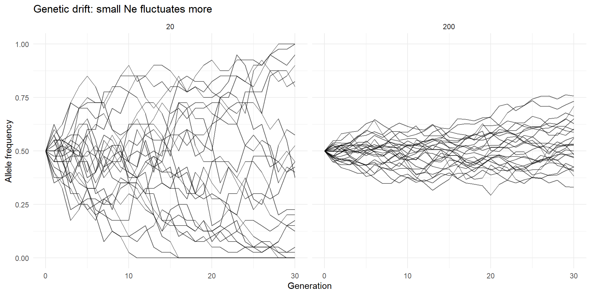
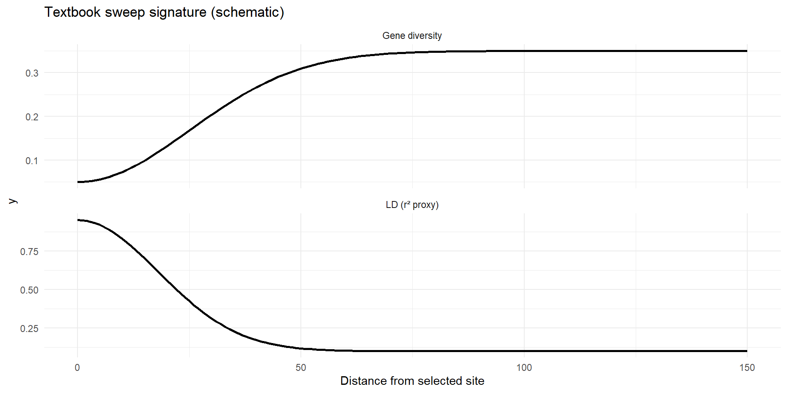

Population Genetics — Conceptual Framework
Lean Lecture Version
Peter Sørensen
Center for Quantitative Genetics and Genomics
Aarhus University
Population Genetics: The Big Framework
From DNA variation
to
evolutionary forces.
What Is Population Genetics Really About?
Everything reduces to:
- Allele frequencies
- Genotype frequencies
- Changes across generations
Evolution = change in allele frequencies over time
What Do We Actually Measure?
From genotype data we compute:
- Allele frequencies (\(p\), \(q\))
- Genotype frequencies
- Heterozygosity
- Linkage disequilibrium
- Genetic diversity (\(\pi\), GD)
All observable patterns are summaries of frequencies.
The Gene Pool
Diploid population:
- \(N\) individuals
- \(2N\) alleles
Allele frequency:
\[
p = \frac{\#A}{2N}
\]
The gene pool is the fundamental unit of analysis.
The Null Model: Hardy–Weinberg
If mating is random:
\[
f(AA)=p^2,\quad f(Aa)=2pq,\quad f(aa)=q^2
\]
\[
p^2 + 2pq + q^2 = 1
\]
This is probability — not biology.
Why Hardy–Weinberg Works
Random union of gametes:
- Probability of \(A\) = \(p\)
- Probability of \(a\) = \(q\)
Multiplication rule:
\[
P(AA)=p \times p = p^2
\]
HW assumes independence between gametes.
What Hardy–Weinberg Really Means
If HW holds:
- No evolutionary forces
- Allele frequencies constant
- Genotype proportions predictable
HW = no evolution baseline
When HW Fails
Deviation implies:
- Non-random mating
- Selection
- Population structure
- Drift
- Migration
Different forces → different patterns.
Homozygote Excess: Why?
Possible explanations:
- Inbreeding
- Wahlund effect
- Positive assortative mating
Same statistical pattern, different biological causes.
Inbreeding and \(F\)
Under inbreeding:
\[
f(Aa)=2pq(1-F)
\]
\[
f(AA)=p^2 + Fpq
\]
Inbreeding:
- Changes genotype frequencies
- Does not change allele frequencies
This distinction is critical.
Genetic Drift
Finite populations:
- Sampling error each generation
- Allele frequencies fluctuate randomly
Drift is stronger when \(N\) is small.
Drift vs Selection
| Random |
Systematic |
| Strong in small \(N\) |
Depends on fitness differences |
| Can fix harmful alleles |
Favors beneficial alleles |
Students must clearly distinguish these.
Mutation
Mutation:
- Introduces new alleles
- Rare per site
- Continuous
Without mutation:
- All variation eventually disappears.
Migration (Gene Flow)
Migration:
- Moves alleles between populations
- Reduces divergence
- Increases within-population diversity
Admixture leaves genomic signatures.
Recombination
Recombination:
- Does not change allele frequencies
- Changes haplotypes
- Breaks down linkage disequilibrium
Reshuffles genetic variation.
Linkage Disequilibrium (LD)
If independent:
\[
P_{AB} = p_A p_B
\]
If not:
\[
D = P_{AB} - p_A p_B
\]
LD = non-random allele association.
Why LD Exists
LD arises from:
- New mutation
- Selection
- Drift
- Population structure
- Admixture
LD decays by recombination:
\[
D_t = (1-r)^t D_0
\]
Natural Selection
Selection acts on genotypes:
\[
p' = \frac{p^2 w_{AA} + pq w_{Aa}}{\bar w}
\]
Alleles change because genotypes differ in fitness.
Dominant vs Recessive Selection
- Dominant beneficial allele spreads quickly
- Recessive beneficial allele spreads slowly when rare
Dominance affects rate, not direction.
Selective Sweep
When beneficial mutation rises:
- Nearby alleles hitchhike
- Diversity drops
- LD increases
Sweep = reduced variation around selected site.
Balancing Selection
Opposite of sweep:
- Maintains multiple alleles
- High diversity
- Often immune genes
Pattern: unusually high variation.
Mutation–Drift Balance
Neutral diversity:
\[
\hat{H} \approx \frac{4N_e\mu}{1+4N_e\mu}
\]
Genetic diversity reflects:
- Effective population size
- Mutation rate
Master Summary
Population genetics connects:
Observed patterns
→ Deviations from null
→ Evolutionary forces
Everything reduces to:
- Frequencies
- Independence assumptions
- Identifying which force caused deviation
What You Must Be Able To Do
You should be able to:
- Calculate allele frequencies
- Apply Hardy–Weinberg
- Interpret deviations
- Distinguish drift vs selection
- Recognize sweep vs balancing selection patterns
If you can do this — you understand the chapter.
Exercise 1 — Allele Frequencies
In a population of 200 individuals, genotype counts are:
Questions:
- What is the allele frequency of A?
- What is the allele frequency of a?
Take 2 minutes. Discuss with your neighbor.
Exercise 2 — Hardy–Weinberg Expectation
Suppose:
\(p = 0.7\), \(q = 0.3\)
- What are the expected genotype frequencies under HW?
- If observed heterozygotes = 0.30, is there deviation?
Work it out.
Exercise 3 — Estimating Inbreeding
Suppose:
\(p = 0.6\), \(q = 0.4\)
Observed heterozygotes = 0.30
Expected under HW:
\[
2pq = 2(0.6)(0.4) = 0.48
\]
Estimate:
\[
F = 1 - \frac{H_{obs}}{H_{exp}}
\]
Exercise 4 — Selection Direction
Suppose:
\(p = 0.4\)
Fitness values:
- \(w_{AA} = 1.2\)
- \(w_{Aa} = 1.0\)
- \(w_{aa} = 0.8\)
Will allele A increase or decrease?
No full calculation needed — reason conceptually.
Clicker 1
Inbreeding:
- Changes allele frequencies
- Changes genotype frequencies
- Changes both
- Changes neither
Clicker 2
Which scenario produces stronger drift?
- Large population, weak selection
- Small population, no selection
- Large population, strong selection
- Migration between populations
Clicker 3
A recent selective sweep produces:
- High diversity near selected site
- Low diversity near selected site
- No change in LD
- Increased heterozygosity genome-wide
Clicker 4
Recombination directly changes:
- Allele frequencies
- Genotype fitness
- Linkage disequilibrium
- Mutation rate
Clicker 5
Two subpopulations are mixed. Each is in HW individually.
The combined population shows heterozygote deficit.
This is:
- Selection
- Inbreeding
- Wahlund effect
- Drift
Clicker 6
A beneficial allele is recessive.
When rare, selection is:
- Very strong
- Weak
- Neutral
- Impossible to determine
How to use this deck
- Students watch narrated slides before class
- Class time: clickers + short calculations + discussion
- Followed by 2h exercise session
HWE model
- Allele frequencies: p and q = 1 − p
- Expected genotype frequencies:
- AA = p^2
- Aa = 2pq
- aa = q^2
Clicker
If p = 0.7, heterozygote frequency is:
A. 0.21
B. 0.42
C. 0.49
D. 0.09
Genetic Drift

Selective Sweep (Schematic)

Take-home
- HWE = null model
- Inbreeding reduces heterozygosity
- LD decays with recombination
- Drift stronger in small Ne
- Selection leaves genomic signatures